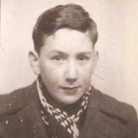

Portrait d’archive
Marcel Ginsberg
Marcel GINSBERG
Nom : GINSBERG
Prénom(s) : Marcel
Date naissance : 31/03/1931 (Source: maison du Refuge)
Âge (ans) : 13
Lieu naissance : La Tronche
Pays ou département : Isère
Lieu rassemblement : Lyon
Dernière adresse : 135, Grande Rue de Montplaisir (aujourd’hui Avenue des Frères Lumière)
Ville : Lyon
Code postal : 69008
N° Convoi : 69
Date déportation : 07/03/1944
Informations diverses : Marcel est le fils de Adolphe Ginsberg (25/08/1900, Lodz, Pologne), étudiant en pharmacie ( assistant pharmacien) et de Bajla, Ruchla née Szajnberg (14/10/1904, Lodz, Pologne), hôtelière-restauratrice. Marcel est né à La Tronche dans l’Isère. Ils vivaient en 1936 à Lyon au 18 rue des Maçons (69008). Marcel était scolarisé à 4 ans à l’Ecole Edouard Herriot dans le 8ème arrondissement (entré le 06/01/1935). La famille déménage au 135, Grande Rue de Montplaisir (aujourd’hui Avenue des Frères Lumière). Marcel est caché à la Maison du Refuge (77, rue de la Villette 69003 Lyon) du 08/02/1944 au 02/03/1944 (Source: APAFFIDA, Association des parents et amis des familles françaises israélites déportées en Allemagne). Il est arrêté et déporté à Auschwitz avec son père Adolphe et sa mère Bajla, par le convoi 69 du 07/03/1944. Ils sont tous les trois morts à Auschwitz.
Ginsberg (Marcel), né le 31 mars 1931 à La Tronche (Isère), décédé le 12 mars 1944 à Auschwitz (Pologne). JO
Ginsberg (Adolphe), né le 25 août 1900 à Lodz (Pologne), décédé le 12 mars 1944 à Auschwitz (Pologne). Ginsberg, née Szajnberg (Bajla, Ruchla) le 14 octobre 1904 à Lodz (Pologne), décédée le 12 mars 1944 à Auschwitz (Pologne).
Lieu de déportation : Auschwitz
Lieu de départ : Drancy
Nombre total de déporté·e·s du convoi : 1501
Gazé·e·s à l'arrivée : 1311 (87,3 %)
Survivant·e·s en 1945 : 34 (2,3 %)